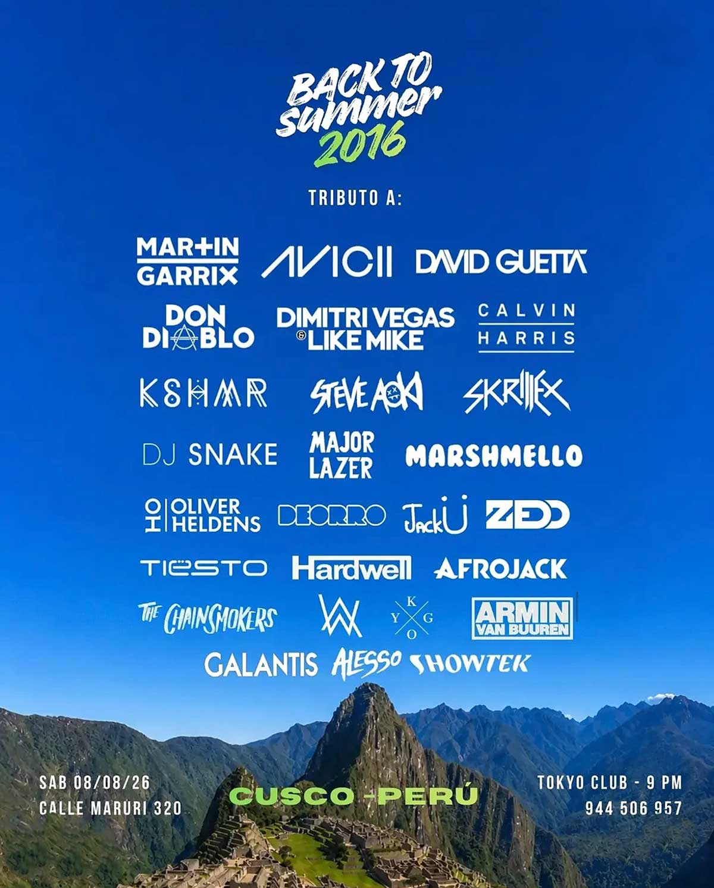

BACK TO SUMMER 2016
fecha: 08/08/26 hora: 9pm
lugar: Tokyo Club,
Calle Maruri 320, Cusco


🌴 Por primera vez en Cusco llega BACK TO SUMMER 2016. Revive una de las mejores épocas de la música electrónica con una selección de los clásicos que marcaron toda una generación. 🌅🎧
Prepárate para una noche llena de energía, nostalgia y los mejores himnos del EDM en una experiencia pensada para transportarte de vuelta al verano de 2016. 🔊✨
🎈 Además, con tu entrada recibirás acceso mediante código QR y, según la etapa de compra, podrás llevarte un póster oficial del evento y una pulsera con barra LED y pin. 💚
📍 Tokyo Club – Calle Maruri 320, Cusco
🕘 Desde las 9:00 PM
📅 Sábado 08 de agosto
🎟 Entradas:
• Primeras 50: S/ 20 (QR de acceso al primer piso + Póster)
• Siguientes 50: S/ 25 (QR de acceso al primer y segundo piso+ Póster + Pulsera LED)
• Preventa final: S/ 30 (QR de acceso al primer y segundo piso + Póster + Pulsera y barra LED)
• En puerta: S/ 35
📲 Separa tu entrada al: 944 506 957
⚡ Primera edición en Cusco. No te quedes fuera y sé parte de una noche que te hará revivir los mejores recuerdos del EDM. 🌴🎶
#avicii #edm #cusco #rave #martingarrix
LINE-UP: